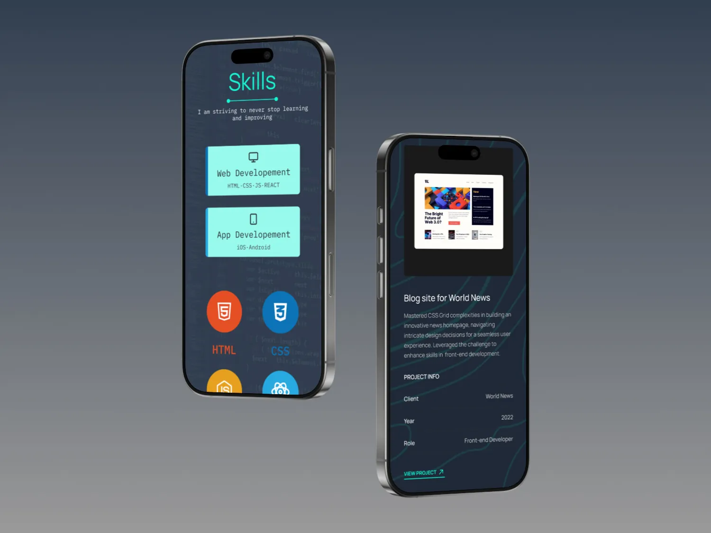
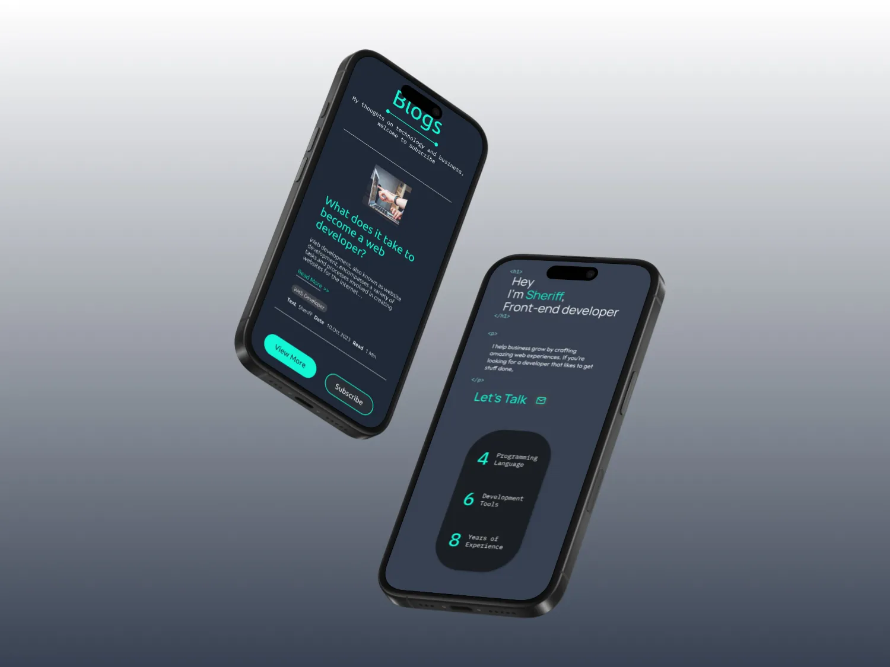
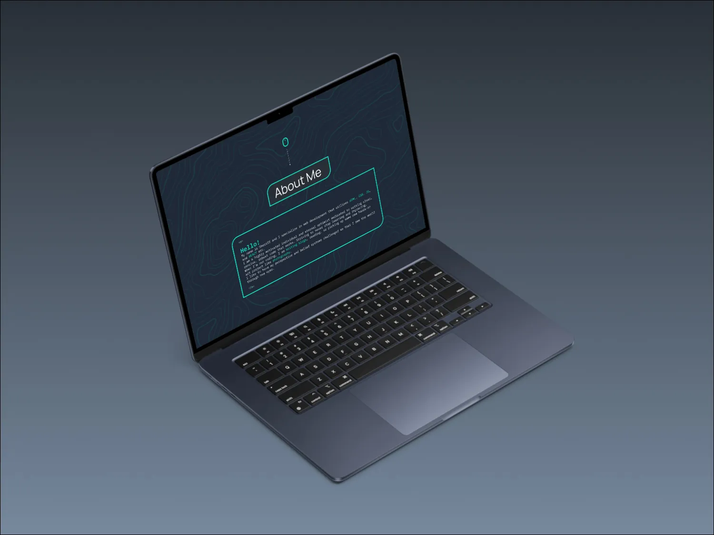
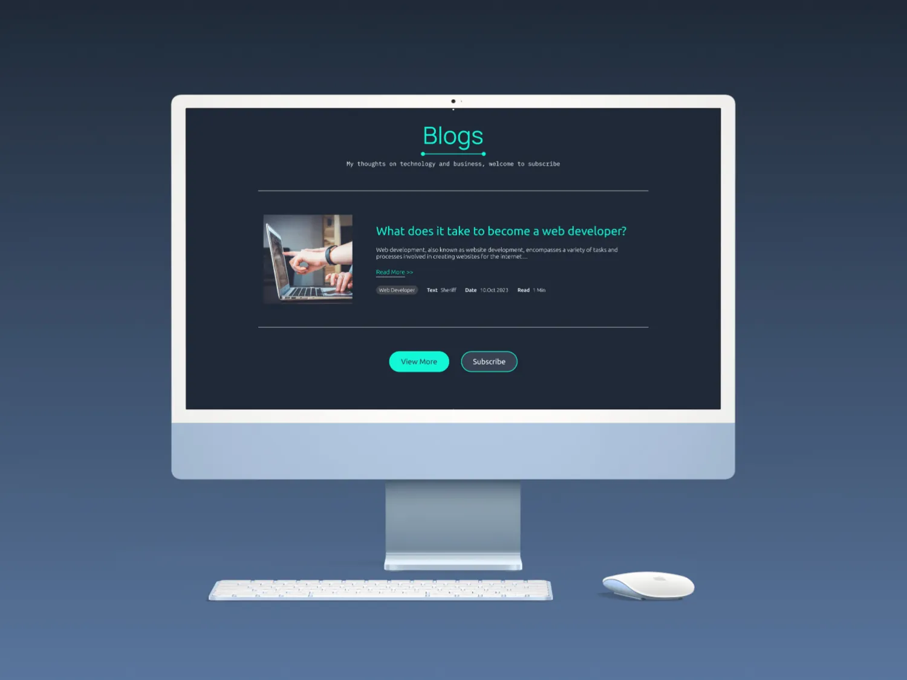

Front-end developer portfolio
A portfolio site for a front-end developer, designed to put the projects and skills first.

The challenge
A developer's portfolio has seconds to show what they can do. It needs to be readable, accessible and easy to navigate on any device.
My approach
I studied leading portfolios to understand current layouts and features, then chose a clean, modern style built on readability, hierarchy and visual storytelling.
Process
- Analysed top developer portfolios for design trends and layouts.
- Sketched low-fidelity layouts for the homepage, project pages and about and contact sections.
- Designed high-fidelity desktop and mobile screens and a working prototype.
- Implemented the designs in HTML, CSS and JavaScript.
The solution
An engaging, accessible portfolio that highlights the developer's projects and technical skills.



